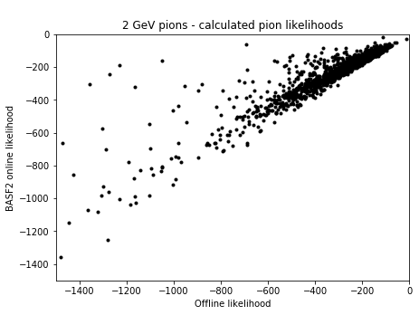
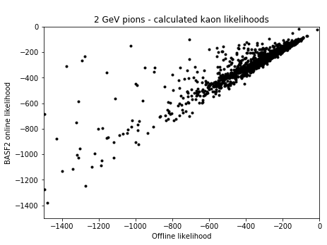
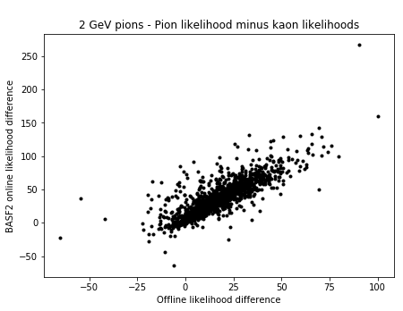
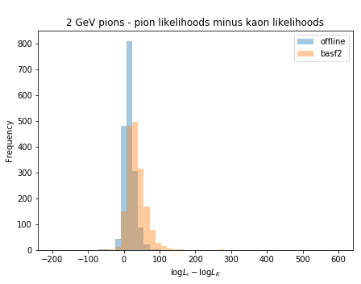
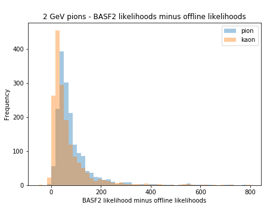
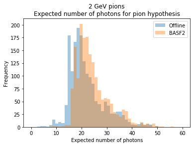
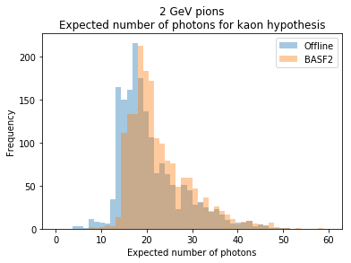
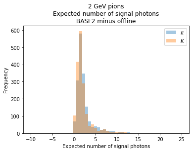

Today I continued the off-by-one studies that I began last Monday. However, with a fresh Jupyter kernel and the same code from last time, the plots for the ch-1 mapping improved substantially. In fact, it has the best performance by far. All the plots can be found here. Further, for the ~1700 tracks that I calculate likelihoods for, the percentage of tracks with pion likelihood greater than kaon likelihood for each of the mappings is...
| BASF2 | 3.48% |
|---|---|
ch-1 | 8.21% |
ch | 8.90% |
ch+1 | 11.35% |
ch+63 | 17.34% |
Now that we seem to have fixed whatever was broken with the offline likelihoods, let's look at the performance of the likelihoods. First, the original plots:
   Now another histogram. This depicts the distribution of BASF2 likelihood minus the analytic likelihood for the particles.
With this, we see that the pion distribution is shifted a little to the right of the kaon distribution. This is interesting, because this means that the BASF2 likelihoods are greater than our offline likelihoods by a greater amount for pions than for kaons. I suggested that perhaps this is caused by our Poisson term, as we are possibly using different numbers for the expected number of digits than the analytic likelihood predicts. As such, I've plotted histograms of the number of signal photons expected for the pion and kaon hypotheses for both the BASF2 reported numbers and the offline numbers we calculate.
  From these plots, we see that the offline likelihood underpredicts the number of signal photons (compared to the BASF2 number) almost always. As such, we'll adjust the number of photons in our background (currently set to 1) by adding the 2-3 that the signal distributions differ by, since we're typically off by a constant amount and the only number that actually goes into the likelihood calculation is Nh + NB.